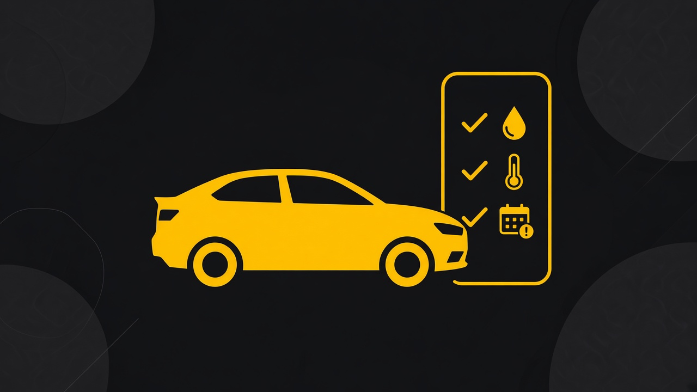

Histórico de manutenção
A manutenção do carro, no seu celular.
Registre trocas, orçamentos e ocorrências no próprio aparelho. Sem conta, sem nuvem e sem depender do recibo da oficina.
Disponível em breve para Android.

No seu aparelho
O histórico fica onde quem dirige consegue olhar. Quando o carro troca de mão, o registro não some com o papel da oficina.
-
Banco local
Data, quilometragem e detalhes da troca ficam no SQLite do app, no arquivo do próprio celular.
-
Fotos no aparelho
As fotos da manutenção ficam no armazenamento do app, sem envio para a nuvem.
-
Um carro por vez
A placa do veículo ativo fica no topo. Toque nela para trocar ou cadastrar outro.
O que o app faz
Da troca de óleo ao orçamento da oficina, cada registro fica ligado ao veículo ativo.
-
Manutenção
Óleo do motor e do câmbio, arrefecimento, velas, bobinas, correias, filtros, suspensão e freios, com data, quilometragem e fotos.
-
Orçamentos
Cotações com itens, preços e aprovação, para comparar antes de autorizar o serviço.
-
Gastos
A soma do que já foi aprovado, sem planilha separada.
-
Ocorrências
Relatos de problemas e soluções, com fotos, vídeos e áudios do que aconteceu com o carro.
-
Avisos
A próxima troca por data e quilometragem, com status em dia ou atrasado a partir do último registro.
Como funciona
Três passos. O app só libera a home depois do primeiro veículo.
-
Cadastre o veículo
Informe marca, modelo e placa no primeiro uso.
-
Registre a troca
Guarde data, quilometragem, detalhes e fotos do serviço.
-
Acompanhe o prazo
Veja nos avisos a próxima data e a quilometragem sugeridas.
Quando a próxima troca vencer, o registro continua com você.
Disponível em breve para Android.